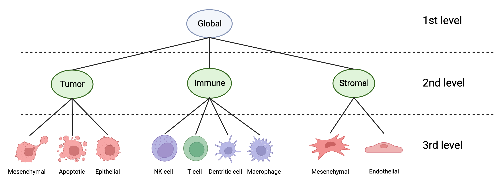

Get started
Install TRIBUS via pip:
$ pip install tribus
Install TRIBUS in Conda environment:
$ conda install tribus
Inputs
Tribus uses two tables as inputs. The first one is the data itself, on which we would like to perform the cell-type annotation. The second one describes the cell types what we expect to be present in our data. The cell-types are described by values [-1, 0, 1], which represents the expected markers expressions in one particular cell-types. The cell-type annotation is hierarchical, which means first we can define higher level cell-types and then we can split them into more detailed categories. An example of a lineage tree can be seen below, which shows how the hierarchical clustering is done.
{kind=link}
Sample data (csv):
Contains the quantification data from the images. Columns should contain the markers and rows should contain the cells. The first column has to contain IDs for the cells and the ID has to be unique. The table can contain columns which are not part of the analysis (like X and Y coordinates of the cell), TRIBUS will filter the table to use only the necessary markers.
sample_data.head()
ID |
X Position |
Y Position |
Area |
Eccentricity |
Hoechst_1 |
NaK_ATPase |
Hoechst_2 |
PAX8 |
PanCK |
CD45 |
Hoechst_3 |
Iba1 |
Vimentin |
CD8 |
|---|---|---|---|---|---|---|---|---|---|---|---|---|---|---|
1 |
5936.515010006671 |
19505.23482321548 |
1499 |
0.8398916344970062 |
6736.040693795864 |
320.628418945964 |
9605.503002001336 |
129.5657104736491 |
581.0020013342228 |
106.45963975983987 |
10473.811207471648 |
163.5010006671114 |
123.52034689793196 |
106.04202801867912 |
2 |
6196.217048710601 |
22677.07736389685 |
1396 |
0.5773154029117625 |
5866.619627507163 |
179.46131805157594 |
6134.684097421204 |
122.75 |
169.50143266475644 |
105.30659025787966 |
8683.305873925501 |
312.615329512894 |
125.26361031518624 |
108.68767908309457 |
3 |
37050.75381903643 |
11394.435957696827 |
1702 |
0.4666065351136428 |
8241.886016451233 |
257.43772032902467 |
4858.68625146886 |
128.20857814336074 |
174.7632197414806 |
104.36662749706228 |
6849.134547591069 |
194.25910693302 |
125.70740305522914 |
102.31198589894242 |
4 |
30095.75526932084 |
12760.01112412178 |
1708 |
0.6176913464677574 |
10089.635831381733 |
253.28981264637 |
7071.768735362998 |
128.29976580796253 |
185.9069086651054 |
106.03629976580795 |
8947.936768149882 |
309.78220140515225 |
124.9953161592506 |
105.95081967213116 |
5 |
34728.02968960864 |
10593.85290148448 |
1482 |
0.5274033096408989 |
25663.173414304994 |
513.7503373819163 |
14967.894736842103 |
177.14912280701753 |
720.7914979757085 |
106.84480431848851 |
22063.045209176787 |
207.7004048582996 |
132.88191632928476 |
104.77125506072876 |
Cell type description table (xlsx):
Contains the description of each expected cell-types. Examaple data:
Markers |
Cell-type1 |
Cell-type2 |
Cell-type3 |
Cell-type4 |
|---|---|---|---|---|
Marker1 |
1 |
0 |
0 |
-1 |
Marker2 |
-1 |
-1 |
0 |
1 |
Marker3 |
1 |
0 |
0 |
0 |
Marker4 |
0 |
1 |
0 |
-1 |
Marker5 |
0 |
-1 |
1 |
0 |
Each node in the lineage tree has to be a separate sheet in the xlsx file. The first sheet always called: "Global", the follwoing sheets called as the corresponding higher level cell-type. Some rules have to be considered, when we design the table:
All cell types names have to be unique across all the level
All level names (except the 1st level) have to apper in a previous level as a cell-type
The sheet has to be in the right order in the xlsx file (Global, first level' sheets, second level's sheets, etc.)
all cell-type has to have at least one positive (1) marker score
That markers which are used in the table have to be in the sample data
An example of the cell-type description table can be found here:
Using Tribus
For this tutorial, we are providing an example dataset and cell-type description table, to perform the cell-type annotation, and to familiarize yourself with the possibilities of the Tribus package. High-Grade-serus ovarian cancer, after the chemotherapy. The data is produced by the CyCIF technology, segmentation, quantification, quality control is perfromed. We suggest to preform proper quality control on the images, by cutting out blured, over-expressed regions from the whole-slide images.
First of all let´s load all the required packages and functions
from tribus import correlation_matrix, marker_expression, log_zscore_normalization
import pandas as pd
Data exploration and preprocessing
We provide some visulaization functions to explore the quantification data. First, you can display the correlations-between markers. In an ideal data the markers describing the same cell-type, should be highly correlated.
Read-in the sample file and visualize the correlation matrix:
sample = pd.read_csv(path, index_col=0)
markers = sample.columns
correlation_matrix(sample, markers)
{kind=link}
Furthermore, it is possible to visualize the distribution of the expression values of each markers. It helps to evaluate, if there are still outliers, which marker has a bad quality etc.
Visualize the marker's expression values:
marker_expression(sample, markers)
{kind=link}
We recommend to normalize the input data, before performing the cell type calling. For this we suggest to perform log-normalization, and after the log-normalized data use z-score normalization. We provide a function, which performs these two step together. However, it has to be noted, that not all dataset is unique, so it is possible, that another type of normalization works better.
Normalize the data:
normalized_sample = log_zscore_normalization(sample)
Let's visualize again the data, and check if it become nicer after the normalization:
marker_expression(sample, markers)
correlation_matrix(sample, markers)
Cell type annotation
Then we can start the actual analysis. We should load the cell type description table into a dictionary, where keys are the level-names and values are the actual dataframes. The first level always has to be names "Global". In the dataframes the columns are the cell type names and the rows are the marker names. For further requeriments of the cell type description table can be found here.
Load the cell type description table:
df = pd.ExcelFile("logic.xlsx")
logic = pd.read_excel(df, df.sheet_names, index_col=0)
Perform the cell type annotation with Tribus:
labels, scores = run_tribus(normalized_sample, logic)
The labels dataframes contains the assigned labels on each level and also the final labels, from the lowest level. There can occur labels like "other" and "undefined". Tribus gives the desciption "other", if the score is too low for each cell types. It assigns "undefined" if the highest score for a cell-type is too close to the second-highest score, so the assignment would be uncertain.
Analysing the results
The very best way to evaluate the results is to look the images using Napari image viewer tool with its Tribus plug-in displaying the labels on the image. The tutorial for Napari and Tribus can be found here. But we also provide further diagnostic plots to help to evaluate the annotation.
The most powerful plot in the module is out heatmap,it is a big help in the evaluation of the results. It shows the median expression of each marker among the cell type, while it also display the cell-type description table, so it is easy to compare the results with the expected values. The median expression values are z-score normalized by markers to make the plot more descriptive.
Let's display the heatmap:
heatmap_for_median_expression(normalized_sample, labels, logic)
{kind=link}
The next thing to check how many cells are in each cell type categories. For this we can use the built-in function $cell_type_distribution()$.
Number of cells in cell type categories:
cell_type_distribution(labels)

You can also perform dimension reduction on the data to visualize it using UMAP. In this way we can check how good was the clustering and how well separated the different cell types. Tribus provides a function for visualization, it colors the UMAP by each marker expression and cell types, so it is easier to evaluate if ech cell types has the correct markers highly expressed. There is an option, to use semi-supervised UMAP, which uses the the Tribus-cell-type labels to perform the dimension reduction, which makes the evaluation even more efficient.
First, let's take a look to the normal, unsupervised UMAP visualisation:
umap_vis(sample_file, labels)

Then visualize the supervised UMAP: .. code-block:: python
umap_vis(sample_file, labels, supervised=False)